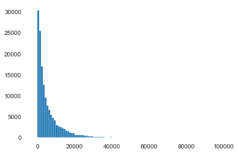
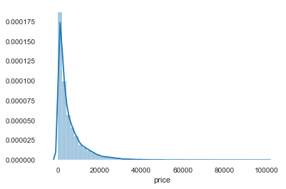
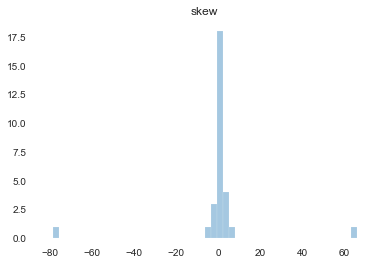

1 2 3 4 5 6 7 8 9 10 11 12 13 14 15 16 17 18 19 20 21 22 23 24 25 26 27 import osimport shutilimport numpy as npimport pandas as pdimport pandas_profiling as pdpfimport timeimport warningswarnings.filterwarnings('ignore' ) import matplotlibimport matplotlib.pyplot as pltimport seaborn as sbn%matplotlib inline import missingno as msnoimport pivottablejsimport lightgbm as lgbimport xgboost as xgbfrom sklearn.decomposition import PCA, FastICA, FactorAnalysis, SparsePCAfrom sklearn.model_selection import GridSearchCV, cross_val_score, StratifiedKFold, train_test_splitfrom sklearn.metrics import mean_squared_error, mean_absolute_erroros.chdir(r"D:\Tianchi" )
1 2 3 4 5 6 7 8 def Sta_inf (data ): print('-' *20 + 'Statistic Info' + '-' *20 +'\n' ) print('_min =\n' ,np.min (data)) print('_max =\n' ,np.max (data)) print('_mean =\n' ,np.mean(data)) print('_ptp =\n' ,np.ptp(data)) print('_std =\n' ,np.std(data)) print('_var =\n' ,np.var(data))
1 2 3 4 5 6 7 8 9 10 11 12 13 14 15 16 17 18 19 ''' 数据含义 SaleID 交易ID，唯一编码 name 汽车交易名称，已脱敏 regDate 汽车注册日期，例如20160101，2016年01月01日 model 车型编码，已脱敏 brand 汽车品牌，已脱敏 bodyType 车身类型：豪华轿车：0，微型车：1，厢型车：2，大巴车：3，敞篷车：4，双门汽车：5，商务车：6，搅拌车：7 fuelType 燃油类型：汽油：0，柴油：1，液化石油气：2，天然气：3，混合动力：4，其他：5，电动：6 gearbox 变速箱：手动：0，自动：1 power 发动机功率：范围 [ 0, 600 ] kilometer 汽车已行驶公里，单位万km notRepairedDamage 汽车有尚未修复的损坏：是：0，否：1 regionCode 地区编码，已脱敏 seller 销售方：个体：0，非个体：1 offerType 报价类型：提供：0，请求：1 creatDate 汽车上线时间，即开始售卖时间 price 二手车交易价格（预测目标） v系列特征 匿名特征，包含v0-14在内15个匿名特征 '''
' 数据含义\nSaleID \t交易ID，唯一编码\nname \t汽车交易名称，已脱敏\nregDate \t汽车注册日期，例如20160101，2016年01月01日\nmodel \t车型编码，已脱敏\nbrand \t汽车品牌，已脱敏\nbodyType \t车身类型：豪华轿车：0，微型车：1，厢型车：2，大巴车：3，敞篷车：4，双门汽车：5，商务车：6，搅拌车：7\nfuelType \t燃油类型：汽油：0，柴油：1，液化石油气：2，天然气：3，混合动力：4，其他：5，电动：6\ngearbox \t变速箱：手动：0，自动：1\npower \t发动机功率：范围 [ 0, 600 ]\nkilometer \t汽车已行驶公里，单位万km\nnotRepairedDamage \t汽车有尚未修复的损坏：是：0，否：1\nregionCode \t地区编码，已脱敏\nseller \t销售方：个体：0，非个体：1\nofferType \t报价类型：提供：0，请求：1\ncreatDate \t汽车上线时间，即开始售卖时间\nprice \t二手车交易价格（预测目标）\nv系列特征 \t匿名特征，包含v0-14在内15个匿名特征\n'
Exploratory Data Analysis 读取数据
1 2 data_train = pd.read_csv(r'data/used_car_train_20200313.csv' , encoding='utf-8' , sep=' ' , ) data_test = pd.read_csv(r'data/used_car_testA_20200313.csv' , encoding='utf-8' , sep=' ' , )
数据集基本信息
1 2 3 4 5 6 print('-' *20 ) print(data_train.shape, '\n' , data_train.columns) print(data_train.describe().iloc[:,0 :4 ]) print('-' *20 ) print(data_test.shape, '\n' , data_test.columns) print(data_test.describe().iloc[:,0 :4 ])
--------------------
(150000, 31)
Index(['SaleID', 'name', 'regDate', 'model', 'brand', 'bodyType', 'fuelType',
'gearbox', 'power', 'kilometer', 'notRepairedDamage', 'regionCode',
'seller', 'offerType', 'creatDate', 'price', 'v_0', 'v_1', 'v_2', 'v_3',
'v_4', 'v_5', 'v_6', 'v_7', 'v_8', 'v_9', 'v_10', 'v_11', 'v_12',
'v_13', 'v_14'],
dtype='object')
SaleID name regDate model
count 150000.000000 150000.000000 1.500000e+05 149999.000000
mean 74999.500000 68349.172873 2.003417e+07 47.129021
std 43301.414527 61103.875095 5.364988e+04 49.536040
min 0.000000 0.000000 1.991000e+07 0.000000
25% 37499.750000 11156.000000 1.999091e+07 10.000000
50% 74999.500000 51638.000000 2.003091e+07 30.000000
75% 112499.250000 118841.250000 2.007111e+07 66.000000
max 149999.000000 196812.000000 2.015121e+07 247.000000
--------------------
(50000, 30)
Index(['SaleID', 'name', 'regDate', 'model', 'brand', 'bodyType', 'fuelType',
'gearbox', 'power', 'kilometer', 'notRepairedDamage', 'regionCode',
'seller', 'offerType', 'creatDate', 'v_0', 'v_1', 'v_2', 'v_3', 'v_4',
'v_5', 'v_6', 'v_7', 'v_8', 'v_9', 'v_10', 'v_11', 'v_12', 'v_13',
'v_14'],
dtype='object')
SaleID name regDate model
count 50000.000000 50000.000000 5.000000e+04 50000.000000
mean 174999.500000 68542.223280 2.003393e+07 46.844520
std 14433.901067 61052.808133 5.368870e+04 49.469548
min 150000.000000 0.000000 1.991000e+07 0.000000
25% 162499.750000 11203.500000 1.999091e+07 10.000000
50% 174999.500000 52248.500000 2.003091e+07 29.000000
75% 187499.250000 118856.500000 2.007110e+07 65.000000
max 199999.000000 196805.000000 2.015121e+07 246.000000
数据集各列值统计
1 2 3 4 for col in data_train.columns: print(data_train[col].value_counts(), '\n' ) print("Unique_value_count:" , data_train[col].nunique(), '\n' ) print('-' *20 )
2047 1
113949 1
15661 1
13612 1
3371 1
..
8913 1
10960 1
53967 1
56014 1
0 1
Name: SaleID, Length: 150000, dtype: int64
Unique_value_count: 150000
--------------------
708 282
387 282
55 280
1541 263
203 233
...
5074 1
7123 1
11221 1
13270 1
174485 1
Name: name, Length: 99662, dtype: int64
Unique_value_count: 99662
--------------------
20000008 180
20000011 158
20000004 157
20000010 157
20000002 155
...
19910807 1
19910902 1
20151209 1
19911011 1
20151201 1
Name: regDate, Length: 3894, dtype: int64
Unique_value_count: 3894
--------------------
0.0 11762
19.0 9573
4.0 8445
1.0 6038
29.0 5186
...
245.0 2
209.0 2
240.0 2
242.0 2
247.0 1
Name: model, Length: 248, dtype: int64
Unique_value_count: 248
--------------------
0 31480
4 16737
14 16089
10 14249
1 13794
6 10217
9 7306
5 4665
13 3817
11 2945
3 2461
7 2361
16 2223
8 2077
25 2064
27 2053
21 1547
15 1458
19 1388
20 1236
12 1109
22 1085
26 966
30 940
17 913
24 772
28 649
32 592
29 406
37 333
2 321
31 318
18 316
36 228
34 227
33 218
23 186
35 180
38 65
39 9
Name: brand, dtype: int64
Unique_value_count: 40
--------------------
0.0 41420
1.0 35272
2.0 30324
3.0 13491
4.0 9609
5.0 7607
6.0 6482
7.0 1289
Name: bodyType, dtype: int64
Unique_value_count: 8
--------------------
0.0 91656
1.0 46991
2.0 2212
3.0 262
4.0 118
5.0 45
6.0 36
Name: fuelType, dtype: int64
Unique_value_count: 7
--------------------
0.0 111623
1.0 32396
Name: gearbox, dtype: int64
Unique_value_count: 2
--------------------
0 12829
75 9593
150 6495
60 6374
140 5963
...
1597 1
1596 1
572 1
316 1
575 1
Name: power, Length: 566, dtype: int64
Unique_value_count: 566
--------------------
15.0 96877
12.5 15722
10.0 6459
9.0 5257
8.0 4573
7.0 4084
6.0 3725
5.0 3144
4.0 2718
3.0 2501
2.0 2354
0.5 1840
1.0 746
Name: kilometer, dtype: int64
Unique_value_count: 13
--------------------
0.0 111361
- 24324
1.0 14315
Name: notRepairedDamage, dtype: int64
Unique_value_count: 3
--------------------
419 369
764 258
125 137
176 136
462 134
...
6414 1
7063 1
4239 1
5931 1
7267 1
Name: regionCode, Length: 7905, dtype: int64
Unique_value_count: 7905
--------------------
0 149999
1 1
Name: seller, dtype: int64
Unique_value_count: 2
--------------------
0 150000
Name: offerType, dtype: int64
Unique_value_count: 1
--------------------
20160403 5848
20160404 5606
20160320 5485
20160312 5383
20160402 5382
...
20151227 1
20151217 1
20160131 1
20160130 1
20160115 1
Name: creatDate, Length: 96, dtype: int64
Unique_value_count: 96
--------------------
500 2337
1500 2158
1200 1922
1000 1850
2500 1821
...
25321 1
8886 1
8801 1
37920 1
8188 1
Name: price, Length: 3763, dtype: int64
Unique_value_count: 3763
--------------------
45.349115 20
48.087217 16
47.568450 15
48.618150 15
47.840357 15
..
44.752849 1
47.710369 1
45.626634 1
43.795918 1
42.340691 1
Name: v_0, Length: 143997, dtype: int64
Unique_value_count: 143997
--------------------
-3.245133 20
3.183323 16
1.942732 15
3.354949 15
2.796739 15
..
3.418050 1
-2.994782 1
-3.022811 1
-3.220458 1
-3.309574 1
Name: v_1, Length: 143998, dtype: int64
Unique_value_count: 143998
--------------------
-0.349860 20
0.826577 16
0.887762 15
-0.158364 15
0.980616 15
..
-0.722279 1
0.214464 1
0.019754 1
-1.154275 1
-0.891405 1
Name: v_2, Length: 143997, dtype: int64
Unique_value_count: 143997
--------------------
-0.218201 20
-1.312990 16
-2.006612 15
-1.619873 15
-1.612432 15
..
3.480942 1
-1.724122 1
3.100129 1
-3.044833 1
1.927354 1
Name: v_3, Length: 143998, dtype: int64
Unique_value_count: 143998
--------------------
-1.626828 20
0.696775 16
-0.365900 15
-0.364986 15
-0.379815 15
..
0.243463 1
1.202133 1
-0.973844 1
-0.550933 1
-0.629790 1
Name: v_4, Length: 143998, dtype: int64
Unique_value_count: 143998
--------------------
0.000000 4485
0.269406 20
0.256226 16
0.261082 15
0.277097 15
...
0.237881 1
0.228538 1
0.272297 1
0.243947 1
0.254857 1
Name: v_5, Length: 139624, dtype: int64
Unique_value_count: 139624
--------------------
0.000000 35465
0.000053 20
0.093472 16
0.075212 15
0.087562 15
...
0.112769 1
0.000540 1
0.122172 1
0.111154 1
0.111825 1
Name: v_6, Length: 109766, dtype: int64
Unique_value_count: 109766
--------------------
0.000000 5467
0.124213 20
0.130272 16
0.139667 15
0.051680 15
...
0.051634 1
0.037816 1
0.024212 1
0.077910 1
0.125709 1
Name: v_7, Length: 138709, dtype: int64
Unique_value_count: 138709
--------------------
0.000000 1597
0.067358 20
0.074742 16
0.073268 15
0.075905 15
...
0.039385 1
0.083553 1
0.032876 1
0.052331 1
0.037786 1
Name: v_8, Length: 142451, dtype: int64
Unique_value_count: 142451
--------------------
0.000000 3486
0.014867 20
0.082765 16
0.101150 15
0.051535 15
...
0.067019 1
0.030366 1
0.095158 1
0.028713 1
0.098763 1
Name: v_9, Length: 140617, dtype: int64
Unique_value_count: 140617
--------------------
2.329386 20
-4.303481 16
-3.163236 15
-4.757359 15
-4.383929 15
..
3.076637 1
-4.074684 1
2.034086 1
2.212329 1
2.903413 1
Name: v_10, Length: 143997, dtype: int64
Unique_value_count: 143997
--------------------
-2.255591 20
-0.330053 16
-1.107940 15
-0.802614 15
-1.436494 15
..
-2.418401 1
-0.622637 1
0.195040 1
-0.802083 1
0.920200 1
Name: v_11, Length: 143997, dtype: int64
Unique_value_count: 143997
--------------------
0.847433 20
2.486297 16
2.375256 15
3.097963 15
2.104470 15
..
0.342035 1
-2.909754 1
0.756550 1
-2.862605 1
-1.811578 1
Name: v_12, Length: 143997, dtype: int64
Unique_value_count: 143997
--------------------
-1.698497 20
-0.043463 16
0.548697 15
-0.834697 15
-0.499453 15
..
-2.415566 1
-1.634300 1
-1.192429 1
-0.265945 1
1.151207 1
Name: v_13, Length: 143998, dtype: int64
Unique_value_count: 143998
--------------------
0.003015 20
-2.290344 16
-3.059444 15
1.027487 15
0.869586 15
..
0.273255 1
1.406113 1
0.530243 1
0.423112 1
0.025664 1
Name: v_14, Length: 143998, dtype: int64
Unique_value_count: 143998
--------------------
根据各列统计，删除不提供信息的列，对非数字值进行调整
1 2 3 4 5 6 7 data_train.drop(columns=['seller' ,'offerType' ], inplace=True ) data_test.drop(columns=['seller' ,'offerType' ], inplace=True ) print(data_train.shape, data_train.columns) print(data_test.shape, data_test.columns) data_train['notRepairedDamage' ].replace('-' , np.nan, inplace=True ) print(data_train['notRepairedDamage' ].value_counts())
(150000, 29) Index(['SaleID', 'name', 'regDate', 'model', 'brand', 'bodyType', 'fuelType',
'gearbox', 'power', 'kilometer', 'notRepairedDamage', 'regionCode',
'creatDate', 'price', 'v_0', 'v_1', 'v_2', 'v_3', 'v_4', 'v_5', 'v_6',
'v_7', 'v_8', 'v_9', 'v_10', 'v_11', 'v_12', 'v_13', 'v_14'],
dtype='object')
(50000, 28) Index(['SaleID', 'name', 'regDate', 'model', 'brand', 'bodyType', 'fuelType',
'gearbox', 'power', 'kilometer', 'notRepairedDamage', 'regionCode',
'creatDate', 'v_0', 'v_1', 'v_2', 'v_3', 'v_4', 'v_5', 'v_6', 'v_7',
'v_8', 'v_9', 'v_10', 'v_11', 'v_12', 'v_13', 'v_14'],
dtype='object')
0.0 111361
1.0 14315
Name: notRepairedDamage, dtype: int64
1 2 print(data_train.isnull().sum (), '\n' ) print(data_test.isnull().sum (), '\n' )
SaleID 0
name 0
regDate 0
model 1
brand 0
bodyType 4506
fuelType 8680
gearbox 5981
power 0
kilometer 0
notRepairedDamage 0
regionCode 0
seller 0
offerType 0
creatDate 0
price 0
v_0 0
v_1 0
v_2 0
v_3 0
v_4 0
v_5 0
v_6 0
v_7 0
v_8 0
v_9 0
v_10 0
v_11 0
v_12 0
v_13 0
v_14 0
dtype: int64
SaleID 0
name 0
regDate 0
model 0
brand 0
bodyType 1413
fuelType 2893
gearbox 1910
power 0
kilometer 0
notRepairedDamage 0
regionCode 0
seller 0
offerType 0
creatDate 0
v_0 0
v_1 0
v_2 0
v_3 0
v_4 0
v_5 0
v_6 0
v_7 0
v_8 0
v_9 0
v_10 0
v_11 0
v_12 0
v_13 0
v_14 0
dtype: int64
观察预测值
1 2 3 4 5 6 7 8 data_train_Y = data_train['price' ] print(data_train_Y.value_counts(), '\n' ) plt.hist(data_train_Y,bins=100 , log=False ) plt.show() plt.hist(data_train_Y,bins=100 , log=True ) plt.show() plt.close()
500 2337
1500 2158
1200 1922
1000 1850
2500 1821
...
25321 1
8886 1
8801 1
37920 1
8188 1
Name: price, Length: 3763, dtype: int64

1 2 3 4 5 6 7 8 import scipy.stats as st
1 2 3 sbn.distplot(data_train_Y) print("Skewness: %f" % data_train_Y.skew()) print("Kurtosis: %f" % data_train_Y.kurt())
Skewness: 3.346487
Kurtosis: 18.995183

1 2 3 4 5 6 plt.figure(1 ); plt.title('skew' ) sbn.distplot(data_train.skew(), kde = False ) plt.figure(2 ); plt.title('kurt' ) sbn.distplot(data_train.kurt(), kde = False )
<matplotlib.axes._subplots.AxesSubplot at 0x25abb14a7f0>

1 sbn.distplot(np.log(data_train_Y))
<matplotlib.axes._subplots.AxesSubplot at 0x25abb20f198>
1 2 3 4 5 6 7 col_num_train = data_train.select_dtypes(exclude='object' ).columns print(col_num_train) col_cat_train = data_train.select_dtypes(include='object' ).columns print(col_cat_train) col_num_test = data_test.select_dtypes(exclude='object' ).columns col_cat_test = data_test.select_dtypes(include='object' ).columns
Index(['SaleID', 'name', 'regDate', 'model', 'brand', 'bodyType', 'fuelType',
'gearbox', 'power', 'kilometer', 'regionCode', 'creatDate', 'price',
'v_0', 'v_1', 'v_2', 'v_3', 'v_4', 'v_5', 'v_6', 'v_7', 'v_8', 'v_9',
'v_10', 'v_11', 'v_12', 'v_13', 'v_14'],
dtype='object')
Index(['notRepairedDamage'], dtype='object')
1 2 3 4 5 6 7 8 9 10 11 12 13 categorical_col = ['name' , 'model' , 'brand' , 'bodyType' , 'fuelType' , 'gearbox' , 'notRepairedDamage' , 'regionCode' ] numerical_col = ['price' , 'power' , 'kilometer' , 'v_0' , 'v_1' , 'v_2' , 'v_3' , 'v_4' , 'v_5' , 'v_6' , 'v_7' , 'v_8' , 'v_9' , 'v_10' , 'v_11' , 'v_12' , 'v_13' ,'v_14' ] print('categorical data info' ) for col in categorical_col: print("train {0} - unique value count: {1} \n{2}" .format (col, data_train[col].nunique(), '-' *20 )) for col in categorical_col: print("test {0} - unique value count: {1} \n{2}" .format (col, data_test[col].nunique(), '-' *20 ))
categorical data info
train name - unique value count: 99662
--------------------
train model - unique value count: 248
--------------------
train brand - unique value count: 40
--------------------
train bodyType - unique value count: 8
--------------------
train fuelType - unique value count: 7
--------------------
train gearbox - unique value count: 2
--------------------
train notRepairedDamage - unique value count: 2
--------------------
train regionCode - unique value count: 7905
--------------------
test name - unique value count: 37453
--------------------
test model - unique value count: 247
--------------------
test brand - unique value count: 40
--------------------
test bodyType - unique value count: 8
--------------------
test fuelType - unique value count: 7
--------------------
test gearbox - unique value count: 2
--------------------
test notRepairedDamage - unique value count: 3
--------------------
test regionCode - unique value count: 6971
--------------------
1 2 print('numerical data info' ) print(data_train[numerical_col].corr())
numerical data info
price power kilometer v_0 v_1 v_2 \
price 1.000000 0.219834 -0.440519 0.628397 0.060914 0.085322
power 0.219834 1.000000 -0.019631 0.215028 0.023746 -0.031487
kilometer -0.440519 -0.019631 1.000000 -0.225034 -0.022228 -0.110375
v_0 0.628397 0.215028 -0.225034 1.000000 0.245049 -0.452591
v_1 0.060914 0.023746 -0.022228 0.245049 1.000000 -0.001133
v_2 0.085322 -0.031487 -0.110375 -0.452591 -0.001133 1.000000
v_3 -0.730946 -0.185342 0.402502 -0.710480 -0.001915 0.001224
v_4 -0.147085 -0.141013 -0.214861 -0.259714 -0.000468 -0.001021
v_5 0.164317 0.119727 0.049502 0.726250 0.109303 -0.921857
v_6 0.068970 0.025648 -0.024664 0.243783 0.999415 0.023877
v_7 -0.053024 -0.060397 -0.017835 -0.584363 -0.110806 0.973689
v_8 0.685798 0.155956 -0.407686 0.514149 -0.298966 0.180285
v_9 -0.206205 -0.140203 -0.149422 -0.186243 -0.007698 -0.236164
v_10 -0.246175 -0.092717 0.083358 -0.582943 -0.921904 0.274341
v_11 -0.275320 -0.122107 0.066542 -0.667809 0.370445 0.800915
v_12 0.692823 0.161990 -0.370153 0.415711 -0.087593 0.535270
v_13 -0.013993 -0.103430 -0.285158 -0.136938 0.017349 -0.055376
v_14 0.035911 -0.023808 -0.120389 -0.039809 0.002143 -0.013785
v_3 v_4 v_5 v_6 v_7 v_8 \
price -0.730946 -0.147085 0.164317 0.068970 -0.053024 0.685798
power -0.185342 -0.141013 0.119727 0.025648 -0.060397 0.155956
kilometer 0.402502 -0.214861 0.049502 -0.024664 -0.017835 -0.407686
v_0 -0.710480 -0.259714 0.726250 0.243783 -0.584363 0.514149
v_1 -0.001915 -0.000468 0.109303 0.999415 -0.110806 -0.298966
v_2 0.001224 -0.001021 -0.921857 0.023877 0.973689 0.180285
v_3 1.000000 -0.001694 -0.233412 -0.000747 0.191278 -0.933161
v_4 -0.001694 1.000000 -0.259739 -0.011275 -0.054241 0.051741
v_5 -0.233412 -0.259739 1.000000 0.091229 -0.939385 0.010686
v_6 -0.000747 -0.011275 0.091229 1.000000 -0.085410 -0.294956
v_7 0.191278 -0.054241 -0.939385 -0.085410 1.000000 0.028695
v_8 -0.933161 0.051741 0.010686 -0.294956 0.028695 1.000000
v_9 0.079292 0.962928 -0.050343 -0.023057 -0.264091 -0.063577
v_10 0.247385 0.071116 -0.440588 -0.917056 0.410014 0.094497
v_11 0.429777 0.110660 -0.845954 0.386446 0.813175 -0.369353
v_12 -0.811301 -0.134611 -0.258521 -0.070238 0.385378 0.882121
v_13 -0.246052 0.934580 -0.162689 0.000758 -0.154535 0.250423
v_14 -0.058561 -0.178518 0.037804 -0.003322 -0.020218 0.030416
v_9 v_10 v_11 v_12 v_13 v_14
price -0.206205 -0.246175 -0.275320 0.692823 -0.013993 0.035911
power -0.140203 -0.092717 -0.122107 0.161990 -0.103430 -0.023808
kilometer -0.149422 0.083358 0.066542 -0.370153 -0.285158 -0.120389
v_0 -0.186243 -0.582943 -0.667809 0.415711 -0.136938 -0.039809
v_1 -0.007698 -0.921904 0.370445 -0.087593 0.017349 0.002143
v_2 -0.236164 0.274341 0.800915 0.535270 -0.055376 -0.013785
v_3 0.079292 0.247385 0.429777 -0.811301 -0.246052 -0.058561
v_4 0.962928 0.071116 0.110660 -0.134611 0.934580 -0.178518
v_5 -0.050343 -0.440588 -0.845954 -0.258521 -0.162689 0.037804
v_6 -0.023057 -0.917056 0.386446 -0.070238 0.000758 -0.003322
v_7 -0.264091 0.410014 0.813175 0.385378 -0.154535 -0.020218
v_8 -0.063577 0.094497 -0.369353 0.882121 0.250423 0.030416
v_9 1.000000 0.026562 -0.056200 -0.313634 0.880545 -0.214151
v_10 0.026562 1.000000 0.006306 0.001289 -0.000580 0.002244
v_11 -0.056200 0.006306 1.000000 0.006695 -0.001671 -0.001156
v_12 -0.313634 0.001289 0.006695 1.000000 0.001512 0.002045
v_13 0.880545 -0.000580 -0.001671 0.001512 1.000000 0.001419
v_14 -0.214151 0.002244 -0.001156 0.002045 0.001419 1.000000
correlation
1 2 3 4 5 f , ax = plt.subplots(figsize = (7 , 7 )) plt.title('Correlation of Numeric Features with Price' ,y=1 ,size=16 ) sbn.heatmap(data_train[numerical_col].corr(), square = True , vmax=0.8 )
<matplotlib.axes._subplots.AxesSubplot at 0x25abb2f5358>
1 2 3 f = pd.melt(data_train, value_vars = numerical_col) g = sbn.FacetGrid(f, col="variable" , col_wrap=3 , sharex=False , sharey=False ) g = g.map (sbn.distplot, "value" )
<seaborn.axisgrid.PairGrid at 0x25abc74cda0>
HBox(children=(FloatProgress(value=0.0, description='variables', max=29.0, style=ProgressStyle(description_wid…
HBox(children=(FloatProgress(value=0.0, description='correlations', max=6.0, style=ProgressStyle(description_w…
HBox(children=(FloatProgress(value=0.0, description='interactions [continuous]', max=729.0, style=ProgressStyl…
HBox(children=(FloatProgress(value=0.0, description='table', max=1.0, style=ProgressStyle(description_width='i…
HBox(children=(FloatProgress(value=0.0, description='missing', max=4.0, style=ProgressStyle(description_width=…
HBox(children=(FloatProgress(value=0.0, description='warnings', max=3.0, style=ProgressStyle(description_width…
HBox(children=(FloatProgress(value=0.0, description='package', max=1.0, style=ProgressStyle(description_width=…
HBox(children=(FloatProgress(value=0.0, description='build report structure', max=1.0, style=ProgressStyle(des…
Feature Engineering Data Washing 1 2 3 4 5 6 7 8 9 data_train = pd.read_csv(r'data/used_car_train_20200313.csv' , encoding='utf-8' , sep=' ' , ) data_test = pd.read_csv(r'data/used_car_testA_20200313.csv' , encoding='utf-8' , sep=' ' , ) print('-' *20 ) print(data_train.shape, '\n' , data_train.columns) print(data_train.describe().iloc[:,0 :4 ]) print('-' *20 ) print(data_test.shape, '\n' , data_test.columns) print(data_test.describe().iloc[:,0 :4 ])
--------------------
(150000, 31)
Index(['SaleID', 'name', 'regDate', 'model', 'brand', 'bodyType', 'fuelType',
'gearbox', 'power', 'kilometer', 'notRepairedDamage', 'regionCode',
'seller', 'offerType', 'creatDate', 'price', 'v_0', 'v_1', 'v_2', 'v_3',
'v_4', 'v_5', 'v_6', 'v_7', 'v_8', 'v_9', 'v_10', 'v_11', 'v_12',
'v_13', 'v_14'],
dtype='object')
SaleID name regDate model
count 150000.000000 150000.000000 1.500000e+05 149999.000000
mean 74999.500000 68349.172873 2.003417e+07 47.129021
std 43301.414527 61103.875095 5.364988e+04 49.536040
min 0.000000 0.000000 1.991000e+07 0.000000
25% 37499.750000 11156.000000 1.999091e+07 10.000000
50% 74999.500000 51638.000000 2.003091e+07 30.000000
75% 112499.250000 118841.250000 2.007111e+07 66.000000
max 149999.000000 196812.000000 2.015121e+07 247.000000
--------------------
(50000, 30)
Index(['SaleID', 'name', 'regDate', 'model', 'brand', 'bodyType', 'fuelType',
'gearbox', 'power', 'kilometer', 'notRepairedDamage', 'regionCode',
'seller', 'offerType', 'creatDate', 'v_0', 'v_1', 'v_2', 'v_3', 'v_4',
'v_5', 'v_6', 'v_7', 'v_8', 'v_9', 'v_10', 'v_11', 'v_12', 'v_13',
'v_14'],
dtype='object')
SaleID name regDate model
count 50000.000000 50000.000000 5.000000e+04 50000.000000
mean 174999.500000 68542.223280 2.003393e+07 46.844520
std 14433.901067 61052.808133 5.368870e+04 49.469548
min 150000.000000 0.000000 1.991000e+07 0.000000
25% 162499.750000 11203.500000 1.999091e+07 10.000000
50% 174999.500000 52248.500000 2.003091e+07 29.000000
75% 187499.250000 118856.500000 2.007110e+07 65.000000
max 199999.000000 196805.000000 2.015121e+07 246.000000
1 2 3 4 5 6 7 8 9 10 11 12 13 14 15 16 17 18 19 20 21 22 23 24 25 26 27 28 29 30 31 32 33 34 35 36 37 38 39 40 41 42 43 44 45 46 def outliers_proc (data: pd.core.frame.DataFrame, col_name: [str ], scale=3 ) -> pd.core.frame.DataFrame: """ 用于清洗异常值，默认用 box_plot（scale=3）进行清洗 :param data: 接收 dataFrame 数据格式 :param col_name: pandas 列名 :param scale: 尺度 :return: """ def box_plot_outliers (data_ser: pd.core.series.Series, box_scale: int ) -> pd.core.series.Series: """ 利用箱线图去除异常值 :param data_ser: 接收 pandas.Series 数据格式 :param box_scale: 箱线图尺度， :return: """ iqr = box_scale * (data_ser.quantile(0.75 ) - data_ser.quantile(0.25 )) val_low = data_ser.quantile(0.25 ) - iqr val_up = data_ser.quantile(0.75 ) + iqr rule_low = (data_ser < val_low) rule_up = (data_ser > val_up) return (rule_low, rule_up), (val_low, val_up) data_n = data.copy() data_series = data_n[col_name] rule, value = box_plot_outliers(data_series, box_scale=scale) index = np.arange(data_series.shape[0 ])[rule[0 ] | rule[1 ]] print("Delete number is: {}" .format (len (index))) data_n = data_n.drop(index) data_n.reset_index(drop=True , inplace=True ) print("Now column number is: {}" .format (data_n.shape[0 ])) index_low = np.arange(data_series.shape[0 ])[rule[0 ]] outliers = data_series.iloc[index_low] print("Description of data less than the lower bound is:" ) print(pd.Series(outliers).describe()) index_up = np.arange(data_series.shape[0 ])[rule[1 ]] outliers = data_series.iloc[index_up] print("Description of data larger than the upper bound is:" ) print(pd.Series(outliers).describe()) fig, ax = plt.subplots(1 , 2 , figsize=(10 , 7 )) sbn.boxplot(y=data[col_name], data=data, palette="Set1" , ax=ax[0 ]) sbn.boxplot(y=data_n[col_name], data=data_n, palette="Set1" , ax=ax[1 ]) return data_n
1 data_train = outliers_proc(data_train, 'power' , scale=3 )
Delete number is: 963
Now column number is: 149037
Description of data less than the lower bound is:
count 0.0
mean NaN
std NaN
min NaN
25% NaN
50% NaN
75% NaN
max NaN
Name: power, dtype: float64
Description of data larger than the upper bound is:
count 963.000000
mean 846.836968
std 1929.418081
min 376.000000
25% 400.000000
50% 436.000000
75% 514.000000
max 19312.000000
Name: power, dtype: float64
1 2 3 4 data_train['is_train_data' ] = 1 data_test['is_train_data' ] = 0 data = pd.concat([data_train, data_test], ignore_index=True )
1 2 3 4 5 data['used_time' ] = ( pd.to_datetime(data['creatDate' ], format ='%Y%m%d' , errors='coerce' ) - pd.to_datetime(data['regDate' ], format ='%Y%m%d' , errors='coerce' )).dt.days
1 data['city' ] = data['regionCode' ].apply(lambda x : str (x)[:-3 ])
1 2 3 4 5 6 7 8 9 10 11 12 13 14 15 16 17 Train_gb = data_train.groupby("brand" ) all_info = {} for kind, kind_data in Train_gb: info = {} kind_data = kind_data[kind_data['price' ] > 0 ] info['brand_amount' ] = len (kind_data) info['brand_price_max' ] = kind_data.price.max () info['brand_price_median' ] = kind_data.price.median() info['brand_price_min' ] = kind_data.price.min () info['brand_price_sum' ] = kind_data.price.sum () info['brand_price_std' ] = kind_data.price.std() info['brand_price_average' ] = round (kind_data.price.sum () / (len (kind_data) + 1 ), 2 ) all_info[kind] = info brand_fe = pd.DataFrame(all_info).T.reset_index().rename(columns={"index" : "brand" }) data = data.merge(brand_fe, how='left' , on='brand' )
1 2 3 4 5 6 7 8 9 10 11 12 13 14 bin = [i*10 for i in range (31 )]data['power_bin' ] = pd.cut(data['power' ], bin , labels=False ) data[['power_bin' , 'power' ]].head()
power_bin
power
0
5.0
60
1
NaN
0
2
16.0
163
3
19.0
193
4
6.0
68
1 2 3 data.drop(['creatDate' , 'regDate' , 'regionCode' ], axis=1 , inplace=True ) print(data.shape) data.columns
(199037, 39)
Index(['SaleID', 'bodyType', 'brand', 'fuelType', 'gearbox', 'is_train_data',
'kilometer', 'model', 'name', 'notRepairedDamage', 'offerType', 'power',
'price', 'seller', 'v_0', 'v_1', 'v_10', 'v_11', 'v_12', 'v_13', 'v_14',
'v_2', 'v_3', 'v_4', 'v_5', 'v_6', 'v_7', 'v_8', 'v_9', 'used_time',
'city', 'brand_amount', 'brand_price_max', 'brand_price_median',
'brand_price_min', 'brand_price_sum', 'brand_price_std',
'brand_price_average', 'power_bin'],
dtype='object')
1 2 data.to_csv('data_for_tree.csv' , index=0 ) data['power' ].hist()
<matplotlib.axes._subplots.AxesSubplot at 0x267a92468d0>
1 2 3 4 5 6 7 from sklearn import preprocessingmin_max_scaler = preprocessing.MinMaxScaler() data['power' ] = np.log(data['power' ] + 1 ) data['power' ] = ((data['power' ] - np.min (data['power' ])) / (np.max (data['power' ]) - np.min (data['power' ]))) data['power' ].plot.hist()
<matplotlib.axes._subplots.AxesSubplot at 0x267abf56160>
1 2 3 4 data['kilometer' ] = ((data['kilometer' ] - np.min (data['kilometer' ])) / (np.max (data['kilometer' ]) - np.min (data['kilometer' ]))) data['kilometer' ].plot.hist()
<matplotlib.axes._subplots.AxesSubplot at 0x267adbc2dd8>
1 2 3 4 5 6 7 8 def max_min (x ): return (x - np.min (x)) / (np.max (x) - np.min (x)) data[['brand_amount' ,'brand_price_average' ,'brand_price_max' , 'brand_price_median' ,'brand_price_min' ,'brand_price_std' ,'brand_price_sum' ,]] = \data[['brand_amount' ,'brand_price_average' ,'brand_price_max' , 'brand_price_median' ,'brand_price_min' ,'brand_price_std' ,'brand_price_sum' ,]].apply(max_min)
1 2 3 4 5 data = pd.get_dummies(data, columns=['model' , 'brand' , 'bodyType' , 'fuelType' , 'gearbox' , 'notRepairedDamage' , 'power_bin' ]) print(data.shape) data.columns
(199037, 370)
Index(['SaleID', 'is_train_data', 'kilometer', 'name', 'offerType', 'power',
'price', 'seller', 'v_0', 'v_1',
...
'power_bin_20.0', 'power_bin_21.0', 'power_bin_22.0', 'power_bin_23.0',
'power_bin_24.0', 'power_bin_25.0', 'power_bin_26.0', 'power_bin_27.0',
'power_bin_28.0', 'power_bin_29.0'],
dtype='object', length=370)
1 2 data.to_csv('data_for_lr.csv' , index=0 )
特征-过滤式 1 2 3 4 5 6 7 8 data_numeric = data[['power' , 'kilometer' , 'brand_amount' , 'brand_price_average' , 'brand_price_max' , 'brand_price_median' ,'price' ]] correlation = data_numeric.corr() f , ax = plt.subplots(figsize = (7 , 7 )) plt.title('Correlation of Numeric Features with Price' ,y=1 ,size=16 ) sbn.heatmap(correlation,square = True , vmax=0.8 )
<matplotlib.axes._subplots.AxesSubplot at 0x2679cfe6be0>
Model 1 2 3 4 5 6 7 8 9 10 11 12 13 14 15 16 17 18 19 20 21 22 23 24 25 26 27 28 29 30 31 32 33 34 35 36 def reduce_mem_usage (df ): """ iterate through all the columns of a dataframe and modify the data type to reduce memory usage. """ start_mem = df.memory_usage().sum () print('Memory usage of dataframe is {:.2f} MB' .format (start_mem)) for col in df.columns: col_type = df[col].dtype if col_type != object : c_min = df[col].min () c_max = df[col].max () if str (col_type)[:3 ] == 'int' : if c_min > np.iinfo(np.int8).min and c_max < np.iinfo(np.int8).max : df[col] = df[col].astype(np.int8) elif c_min > np.iinfo(np.int16).min and c_max < np.iinfo(np.int16).max : df[col] = df[col].astype(np.int16) elif c_min > np.iinfo(np.int32).min and c_max < np.iinfo(np.int32).max : df[col] = df[col].astype(np.int32) elif c_min > np.iinfo(np.int64).min and c_max < np.iinfo(np.int64).max : df[col] = df[col].astype(np.int64) else : if c_min > np.finfo(np.float16).min and c_max < np.finfo(np.float16).max : df[col] = df[col].astype(np.float16) elif c_min > np.finfo(np.float32).min and c_max < np.finfo(np.float32).max : df[col] = df[col].astype(np.float32) else : df[col] = df[col].astype(np.float64) else : df[col] = df[col].astype('category' ) end_mem = df.memory_usage().sum () print('Memory usage after optimization is: {:.2f} MB' .format (end_mem)) print('Decreased by {:.1f}%' .format (100 * (start_mem - end_mem) / start_mem)) return df
1 sample_feature = reduce_mem_usage(pd.read_csv('data_for_tree.csv' ))
Memory usage of dataframe is 62099672.00 MB
Memory usage after optimization is: 16520303.00 MB
Decreased by 73.4%
1 continuous_feature_names = [x for x in sample_feature.columns if x not in ['price' ,'brand' ,'model' ,'brand' ]]
1 2 3 4 5 6 sample_feature = sample_feature.dropna().replace('-' , 0 ).reset_index(drop=True ) sample_feature['notRepairedDamage' ] = sample_feature['notRepairedDamage' ].astype(np.float32) data_train = sample_feature[continuous_feature_names + ['price' ]] data_train_X = data_train[continuous_feature_names] data_train_y = data_train['price' ]
1 2 3 4 5 from sklearn.linear_model import LinearRegressionmodel = LinearRegression(normalize=True ) model = model.fit(data_train_X, data_train_y) 'intercept:' + str (model.intercept_)sorted (dict (zip (continuous_feature_names, model.coef_)).items(), key=lambda x:x[1 ], reverse=True )
[('v_6', 3367064.3416418973),
('v_8', 700675.5609398854),
('v_9', 170630.27723220928),
('v_7', 32322.661932026494),
('v_12', 20473.67079690079),
('v_3', 17868.079541462153),
('v_11', 11474.938996675626),
('v_13', 11261.764560002604),
('v_10', 2683.920090576799),
('gearbox', 881.8225039247895),
('fuelType', 363.90425072159366),
('bodyType', 189.60271012072778),
('city', 44.94975120521572),
('power', 28.553901616757216),
('brand_price_median', 0.5103728134077985),
('brand_price_std', 0.4503634709262824),
('brand_amount', 0.14881120395066205),
('brand_price_max', 0.003191018670313502),
('SaleID', 5.3559899198577976e-05),
('offerType', 6.017042323946953e-06),
('seller', 1.6369158402085304e-06),
('is_train_data', -5.66341623198241e-06),
('brand_price_sum', -2.1750068681876833e-05),
('name', -0.0002980012713063814),
('used_time', -0.002515894332869914),
('brand_price_average', -0.40490484510104074),
('brand_price_min', -2.2467753486894733),
('power_bin', -34.42064411731283),
('v_14', -274.7841180769423),
('kilometer', -372.897526660724),
('notRepairedDamage', -495.1903844628292),
('v_0', -2045.054957354999),
('v_5', -11022.986240536327),
('v_4', -15121.731109848046),
('v_2', -26098.299920467005),
('v_1', -45556.18929728572)]
1 2 3 4 5 6 7 8 9 10 11 12 13 14 15 16 17 subsample_index = np.random.randint(low=0 , high=len (data_train_y), size=50 ) plt.scatter(data_train_X['v_9' ][subsample_index], data_train_y[subsample_index] - model.predict(data_train_X.loc[subsample_index]), color='black' ) plt.xlabel('v_7' ) plt.ylabel('price' ) plt.legend(['True Price' ,'Predicted Price' ],loc='upper right' ) print('The predicted price is obvious different from true price' ) plt.show() print('It is clear to see the price shows a typical exponential distribution' ) plt.figure(figsize=(15 ,5 )) plt.subplot(1 ,2 ,1 ) sbn.distplot(data_train_y) plt.subplot(1 ,2 ,2 ) sbn.distplot(data_train_y[data_train_y < np.quantile(data_train_y, 0.9 )])
The predicted price is obvious different from true price
It is clear to see the price shows a typical exponential distribution
<matplotlib.axes._subplots.AxesSubplot at 0x24c80b26f98>
1 2 3 4 5 6 7 8 9 10 11 12 13 14 15 16 17 18 19 20 21 22 23 data_train_y_ln = np.log(data_train_y + 1 ) print('The transformed price seems like normal distribution' ) plt.figure(figsize=(15 ,5 )) plt.subplot(1 ,2 ,1 ) sbn.distplot(data_train_y_ln) plt.subplot(1 ,2 ,2 ) sbn.distplot(data_train_y_ln[data_train_y_ln < np.quantile(data_train_y_ln, 0.9 )]) model = model.fit(data_train_X, data_train_y_ln) print('intercept:' + str (model.intercept_)) sorted (dict (zip (continuous_feature_names, model.coef_)).items(), key=lambda x:x[1 ], reverse=True )subsample_index = np.random.randint(low=0 , high=len (data_train_y_ln), size=50 ) plt.figure(figsize=(15 ,5 )) plt.subplot(1 ,2 ,1 ) plt.scatter(data_train_X['v_9' ][subsample_index], data_train_y_ln[subsample_index] - model.predict(data_train_X.loc[subsample_index]), color='black' ) plt.xlabel('v_9' ) plt.ylabel('price' ) plt.legend(['True Price' ,'Predicted Price' ],loc='upper right' )
The transformed price seems like normal distribution
intercept:18.750749465662786
<matplotlib.legend.Legend at 0x24c88718e10>
1 2 3 4 5 6 7 8 9 10 11 12 13 14 import datetimesample_feature = sample_feature.reset_index(drop=True ) split_point = len (sample_feature) // 5 * 4 train = sample_feature.loc[:split_point].dropna() val = sample_feature.loc[split_point:].dropna() train_X = train[continuous_feature_names] train_y_ln = np.log(train['price' ] + 1 ) val_X = val[continuous_feature_names] val_y_ln = np.log(val['price' ] + 1 ) model = model.fit(train_X, train_y_ln) mean_absolute_error(val_y_ln, model.predict(val_X))
0.19577667270300972
1 2 3 4 5 6 7 8 9 10 11 12 13 14 15 16 17 18 19 20 21 22 23 24 25 26 27 28 29 30 31 32 33 34 35 36 from sklearn.model_selection import learning_curve, validation_curvefrom sklearn.model_selection import cross_val_scorefrom sklearn.metrics import mean_absolute_error, make_scorer? learning_curve def plot_learning_curve (estimator, title, X, y, ylim=None , cv=None , n_jobs=1 , train_size=np.linspace(.1 , 1.0 , 5 ): plt.figure() plt.title(title) if ylim is not None : plt.ylim(*ylim) plt.xlabel('Training example' ) plt.ylabel('score' ) train_sizes, train_scores, test_scores = learning_curve( estimator, X, y, cv=cv, n_jobs=n_jobs, train_sizes=train_size, scoring=make_scorer(mean_absolute_error)) train_scores_mean = np.mean(train_scores, axis=1 ) train_scores_std = np.std(train_scores, axis=1 ) test_scores_mean = np.mean(test_scores, axis=1 ) test_scores_std = np.std(test_scores, axis=1 ) plt.grid() plt.fill_between(train_sizes, train_scores_mean - train_scores_std, train_scores_mean + train_scores_std, alpha=0.1 , color="r" ) plt.fill_between(train_sizes, test_scores_mean - test_scores_std, test_scores_mean + test_scores_std, alpha=0.1 , color="g" ) plt.plot(train_sizes, train_scores_mean, 'o-' , color='r' , label="Training score" ) plt.plot(train_sizes, test_scores_mean, 'o-' , color="g" , label="Cross-validation score" ) plt.legend(loc="best" ) return plt plot_learning_curve(LinearRegression(), 'Liner_model' , data_train_X[:1000 ], data_train_y_ln[:1000 ], ylim=(0.0 , 0.5 ), cv=5 , n_jobs=1 )
<module 'matplotlib.pyplot' from 'C:\\Users\\Carlos\\AppData\\Roaming\\Python\\Python36\\site-packages\\matplotlib\\pyplot.py'>
1 2 3 4 5 6 7 8 9 10 11 from sklearn.linear_model import LinearRegression, Ridge, Lassomodels = [LinearRegression(), Ridge(), Lasso()] result = dict () for model in models: model_name = str (model).split('(' )[0 ] scores = cross_val_score(model, X=data_train_X, y=data_train_y_ln, verbose=0 , cv = 5 , scoring=make_scorer(mean_absolute_error)) result[model_name] = scores print(model_name + ' is finished' ) result = pd.DataFrame(result) result.index = ['cv' + str (x) for x in range (1 , 6 )] result
LinearRegression is finished
Ridge is finished
Lasso is finished
LinearRegression
Ridge
Lasso
cv1
0.190792
0.194832
0.383899
cv2
0.193758
0.197632
0.381893
cv3
0.194132
0.198123
0.384090
cv4
0.191825
0.195670
0.380526
cv5
0.195758
0.199676
0.383611
1 2 3 4 5 6 7 8 9 10 11 12 13 14 15 16 17 18 19 20 21 22 23 from sklearn.linear_model import LinearRegressionfrom sklearn.svm import SVCfrom sklearn.tree import DecisionTreeRegressorfrom sklearn.ensemble import RandomForestRegressor, GradientBoostingRegressorfrom sklearn.neural_network import MLPRegressorfrom xgboost.sklearn import XGBRegressorfrom lightgbm.sklearn import LGBMRegressormodels = [LinearRegression(), DecisionTreeRegressor(), RandomForestRegressor(), GradientBoostingRegressor(), MLPRegressor(solver='lbfgs' , max_iter=100 ), XGBRegressor(n_estimators = 100 , objective='reg:squarederror' ), LGBMRegressor(n_estimators = 100 )] result = dict () for model in models: model_name = str (model).split('(' )[0 ] scores = cross_val_score(model, X=train_X, y=train_y_ln, verbose=0 , cv = 5 , scoring=make_scorer(mean_absolute_error)) result[model_name] = scores print(model_name + ' is finished' ) result = pd.DataFrame(result) result.index = ['cv' + str (x) for x in range (1 , 6 )] result.T
LinearRegression is finished
---------------------------------------------------------------------------
KeyboardInterrupt Traceback (most recent call last)
<ipython-input-35-7342f698c9cf> in <module>()
16 for model in models:
17 model_name = str(model).split('(')[0]
---> 18 scores = cross_val_score(model, X=train_X, y=train_y_ln, verbose=0, cv = 5, scoring=make_scorer(mean_absolute_error))
19 result[model_name] = scores
20 print(model_name + ' is finished')
c:\programs\python\python36\lib\site-packages\sklearn\model_selection\_validation.py in cross_val_score(estimator, X, y, groups, scoring, cv, n_jobs, verbose, fit_params, pre_dispatch, error_score)
400 fit_params=fit_params,
401 pre_dispatch=pre_dispatch,
--> 402 error_score=error_score)
403 return cv_results['test_score']
404
c:\programs\python\python36\lib\site-packages\sklearn\model_selection\_validation.py in cross_validate(estimator, X, y, groups, scoring, cv, n_jobs, verbose, fit_params, pre_dispatch, return_train_score, return_estimator, error_score)
238 return_times=True, return_estimator=return_estimator,
239 error_score=error_score)
--> 240 for train, test in cv.split(X, y, groups))
241
242 zipped_scores = list(zip(*scores))
c:\programs\python\python36\lib\site-packages\sklearn\externals\joblib\parallel.py in __call__(self, iterable)
984 self._iterating = self._original_iterator is not None
985
--> 986 while self.dispatch_one_batch(iterator):
987 pass
988
c:\programs\python\python36\lib\site-packages\sklearn\externals\joblib\parallel.py in dispatch_one_batch(self, iterator)
823 return False
824 else:
--> 825 self._dispatch(tasks)
826 return True
827
c:\programs\python\python36\lib\site-packages\sklearn\externals\joblib\parallel.py in _dispatch(self, batch)
780 with self._lock:
781 job_idx = len(self._jobs)
--> 782 job = self._backend.apply_async(batch, callback=cb)
783 # A job can complete so quickly than its callback is
784 # called before we get here, causing self._jobs to
c:\programs\python\python36\lib\site-packages\sklearn\externals\joblib\_parallel_backends.py in apply_async(self, func, callback)
180 def apply_async(self, func, callback=None):
181 """Schedule a func to be run"""
--> 182 result = ImmediateResult(func)
183 if callback:
184 callback(result)
c:\programs\python\python36\lib\site-packages\sklearn\externals\joblib\_parallel_backends.py in __init__(self, batch)
543 # Don't delay the application, to avoid keeping the input
544 # arguments in memory
--> 545 self.results = batch()
546
547 def get(self):
c:\programs\python\python36\lib\site-packages\sklearn\externals\joblib\parallel.py in __call__(self)
259 with parallel_backend(self._backend):
260 return [func(*args, **kwargs)
--> 261 for func, args, kwargs in self.items]
262
263 def __len__(self):
c:\programs\python\python36\lib\site-packages\sklearn\externals\joblib\parallel.py in <listcomp>(.0)
259 with parallel_backend(self._backend):
260 return [func(*args, **kwargs)
--> 261 for func, args, kwargs in self.items]
262
263 def __len__(self):
c:\programs\python\python36\lib\site-packages\sklearn\model_selection\_validation.py in _fit_and_score(estimator, X, y, scorer, train, test, verbose, parameters, fit_params, return_train_score, return_parameters, return_n_test_samples, return_times, return_estimator, error_score)
526 estimator.fit(X_train, **fit_params)
527 else:
--> 528 estimator.fit(X_train, y_train, **fit_params)
529
530 except Exception as e:
c:\programs\python\python36\lib\site-packages\sklearn\tree\tree.py in fit(self, X, y, sample_weight, check_input, X_idx_sorted)
1137 sample_weight=sample_weight,
1138 check_input=check_input,
-> 1139 X_idx_sorted=X_idx_sorted)
1140 return self
1141
c:\programs\python\python36\lib\site-packages\sklearn\tree\tree.py in fit(self, X, y, sample_weight, check_input, X_idx_sorted)
363 min_impurity_split)
364
--> 365 builder.build(self.tree_, X, y, sample_weight, X_idx_sorted)
366
367 if self.n_outputs_ == 1:
KeyboardInterrupt:
1 2 3 4 5 6 7 8 9 10 11 12 13 14 15 16 17 18 19 20 21 22 23 24 25 26 27 28 29 objective = ['regression' , 'regression_l1' , 'mape' , 'huber' , 'fair' ] num_leaves = [3 ,5 ,10 ,15 ,20 ,40 , 55 ] max_depth = [3 ,5 ,10 ,15 ,20 ,40 , 55 ] bagging_fraction = [] feature_fraction = [] drop_rate = [] best_obj = dict () for obj in objective: model = LGBMRegressor(objective=obj) score = np.mean(cross_val_score(model, X=train_X, y=train_y_ln, verbose=0 , cv = 5 , scoring=make_scorer(mean_absolute_error))) best_obj[obj] = score best_leaves = dict () for leaves in num_leaves: model = LGBMRegressor(objective=min (best_obj.items(), key=lambda x:x[1 ])[0 ], num_leaves=leaves) score = np.mean(cross_val_score(model, X=train_X, y=train_y_ln, verbose=0 , cv = 5 , scoring=make_scorer(mean_absolute_error))) best_leaves[leaves] = score best_depth = dict () for depth in max_depth: model = LGBMRegressor(objective=min (best_obj.items(), key=lambda x:x[1 ])[0 ], num_leaves=min (best_leaves.items(), key=lambda x:x[1 ])[0 ], max_depth=depth) score = np.mean(cross_val_score(model, X=train_X, y=train_y_ln, verbose=0 , cv = 5 , scoring=make_scorer(mean_absolute_error))) best_depth[depth] = score sbn.lineplot(x=['0_initial' ,'1_turning_obj' ,'2_turning_leaves' ,'3_turning_depth' ], y=[0.143 ,min (best_obj.values()), min (best_leaves.values()), min (best_depth.values())])
<matplotlib.axes._subplots.AxesSubplot at 0x24c92d99438>
1 2 3 4 5 6 7 8 9 10 from sklearn.model_selection import GridSearchCVparameters = {'objective' : objective , 'num_leaves' : num_leaves, 'max_depth' : max_depth} model = LGBMRegressor() clf = GridSearchCV(model, parameters, cv=5 ) clf = clf.fit(data_train_X, data_train_y) print(clf.best_params_) model = LGBMRegressor(objective='regression' , num_leaves=55 , max_depth=15 ) np.mean(cross_val_score(model, X=data_train_X, y=data_train_y_ln, verbose=0 , cv = 5 , scoring=make_scorer(mean_absolute_error)))
{'max_depth': 15, 'num_leaves': 55, 'objective': 'regression'}
0.13754820909576437